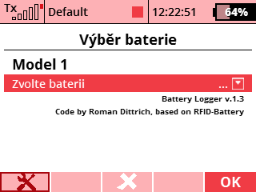
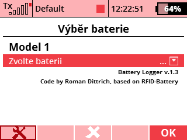

Battery Log
 

Description
Application is used to log battery cycles and display (+ do voice alarms) for remaining capacity percentage as well as relevant alarms. Logger contains two forms. The first one is "Battery Log," which can be found in the Applications menu after activating the user application. Here you can adjust the settings for selected model as well as batteries for that model. The second menu "Select battery" is in the main menu and server for battery selection before each flight.
- One application for all models.
- All settings are model-specific.
- Up to 15 batteries for each model. Each battery has its name, cell count, capacity and cycle count stored.
- Automatic detection of empty battery when powering the model, alarm has user selectable voice-alert, can be repeated once or three times (alarm is disabled when the alarm voltage is set to 0.00V).
- Capacity alarm has user selectable voice-alert, can be repeated once or three times. Setting this to 0% effectively disables the alarm.
- Low battery voltage alarm has user selectable voice-alert, can be repeated once or three times (alarm is disabled when the alarm voltage is set to 0.00V).
- Possibility to assing a switch for remaining percentage announcement, repeat period can be set.
- Flight logging to csv file (full battery has to be connected and model has to be powered for at least 30 seconds and consume some mAhs for the logging to take place).
Based on RFID-Battery by Tero from RC-Thoughts.
Usage
After initial application settings, the only thing to do before each flight is to select currently used battery. Application will display battery information in the telemetry window and will cause alarms for low voltage, capacity etc. After finishing the flight it is logged to csv file and the current battery is deselected.
Source code can be downloaded from the official
repository.